Test Shock Persistence and Variance (Savings Distribution)
back to Fan's Dynamic Assets Repository Table of Content.
Testing the ff_az_ds_vec program for solving the savings only dynamic programming problem.
defaults in ffs_az_set_default_param.m are:
- param_map('fl_z_rho') = 0.8;
- param_map('fl_z_sig') = 0.2;
here test three levels of persistence:
- iid shocks
- 0.5 persistence
- 0.99 persistence
for each shock, thest at these standard deviations of the log normal shock:
- 0.05
- 0.10
- 0.30
@seealso
- PREFERENCE: savings only quick vs benchmark testing: fsi_az_ds_pref
- SHOCK: savings only asset grid count testing: fsi_az_ds_shock
- PREFERENCE: borr + save quick vs benchmark testing: fsi_abz_ds_pref
- SHOCK: borr + save only asset grid count testing: fsi_abz_ds_shock
Contents
Set Shared Parameters
close all; clear all; ar_fl_z_rho = [0.0, 0.50, 0.99]; ar_fl_z_sig = [0.05, 0.10, 0.3]; it_a_n = 750; it_z_n = 15;
Simulate Model with schok persistence = 0.0, IID
for fl_z_sig = ar_fl_z_sig disp('xxxxxxxxxxxxxxxxxxxxxxxxxxx'); disp('xxxxxxxxxxxxxxxxxxxxxxxxxxx'); disp(['fl_z_rho = ' num2str(ar_fl_z_rho(1))]); disp(['fl_z_sig = ' num2str(fl_z_sig)]); disp('xxxxxxxxxxxxxxxxxxxxxxxxxxx'); disp('xxxxxxxxxxxxxxxxxxxxxxxxxxx'); disp(''); disp(''); disp(''); disp(''); % Call Default Parameters <https://fanwangecon.github.io/CodeDynaAsset/m_az/paramfunc/html/ffs_az_set_default_param.html ffs_az_set_default_param> bl_input_override = true; it_param_set = 9; [param_map, support_map] = ffs_az_set_default_param(it_param_set); % Simulation Accuracy param_map('it_a_n') = it_a_n; param_map('it_z_n') = it_z_n; param_map('fl_z_rho') = ar_fl_z_rho(1); param_map('fl_z_sig') = fl_z_sig; % Display Parameters support_map('bl_display') = false; support_map('bl_display_final') = false; support_map('bl_time') = true; support_map('bl_profile') = false; % Call Grid Generator <https://fanwangecon.github.io/CodeDynaAsset/m_az/paramfunc/html/ffs_az_get_funcgrid.html ffs_az_get_funcgrid> [armt_map, func_map] = ffs_az_get_funcgrid(param_map, support_map, bl_input_override); % Call Dynamic Programming Problem <https://fanwangecon.github.io/CodeDynaAsset/m_az/solve/html/ff_az_vf_vecsv.html ff_az_vf_vecsv> result_map = ff_az_vf_vecsv(param_map, support_map, armt_map, func_map); % Call Distribution CProgram result_map = ff_az_ds_vec(param_map, support_map, armt_map, func_map, result_map, bl_input_override); % Snap snapnow; end % close all close all;
xxxxxxxxxxxxxxxxxxxxxxxxxxx
xxxxxxxxxxxxxxxxxxxxxxxxxxx
fl_z_rho = 0
fl_z_sig = 0.05
xxxxxxxxxxxxxxxxxxxxxxxxxxx
xxxxxxxxxxxxxxxxxxxxxxxxxxx
Warning:
"C:\Users\fan\CodeDynaAsset\m_az\test\ff_az_ds_vec\test_pref\html"
not found in path.
Warning:
"C:\Users\fan\CodeDynaAsset\m_az\test\ff_az_ds_vec\test_shock\html"
not found in path.
Elapsed time is 1.295199 seconds.
Elapsed time is 0.858821 seconds.
"tb_prob_drv, Percentiles of Y, …" "cl_mt_pol_a"
percentiles cl_mt_pol_aPercentileValues fracOfSumHeldBelowThisPercentile
___________ ___________________________ ________________________________
0.1 0 0
1 0 0
5 0 0
10 0 0
15 0 0
20 0 0
25 0 0
35 0 0
50 0 0
65 0 0
75 0 0
80 0.066756 0.90431
85 0.066756 0.90431
90 0.066756 0.90431
95 0.066756 0.90431
99 0.066756 0.90431
99.9 0.13351 0.99568
"tb_prob_drv, Percentiles of Y, …" "cl_mt_pol_coh"
percentiles cl_mt_pol_cohPercentileValues fracOfSumHeldBelowThisPercentile
___________ _____________________________ ________________________________
0.1 1.1003 0.0018126
1 1.1485 0.018874
5 1.1734 0.048227
10 1.1988 0.10498
15 1.2248 0.19744
20 1.2248 0.19744
25 1.2513 0.32443
35 1.2672 0.33859
50 1.2932 0.49517
65 1.3197 0.6507
75 1.3344 0.74797
80 1.3633 0.84696
85 1.3633 0.84696
90 1.3928 0.9144
95 1.423 0.95626
99 1.4612 0.98844
99.9 1.5296 0.99897
"tb_prob_drv, Percentiles of Y, …" "cl_mt_pol_c"
percentiles cl_mt_pol_cPercentileValues fracOfSumHeldBelowThisPercentile
___________ ___________________________ ________________________________
0.1 1.1003 0.0018326
1 1.1485 0.019083
5 1.1734 0.048759
10 1.1988 0.10613
15 1.2248 0.19962
20 1.2248 0.19962
25 1.2513 0.32802
35 1.2672 0.34233
50 1.2932 0.50064
65 1.3061 0.68884
75 1.3197 0.75017
80 1.3344 0.88307
85 1.3344 0.88307
90 1.336 0.90744
95 1.3518 0.94688
99 1.387 0.98912
99.9 1.3945 0.99892
tb_outcomes_meansdperc: mean, sd, percentiles
mean sd coefofvar min max pYis0 pYisMINY pYisMAXY p0_1 p1 p5 p10 p15 p20 p25 p35 p50 p65 p75 p80 p85 p90 p95 p99 p99_9
________ ________ _________ ______ ______ _______ _________ ________ ______ ______ ______ ______ ______ ______ ______ ______ ______ ______ ______ ________ ________ ________ ________ ________ _______
cl_mt_pol_a 0.014137 0.028953 2.0481 0 48.064 0.79852 0.79852 0 0 0 0 0 0 0 0 0 0 0 0 0.066756 0.066756 0.066756 0.066756 0.066756 0.13351
cl_mt_pol_coh 1.2945 0.070889 0.054762 1.1003 52.735 0 0.0021324 0 1.1003 1.1485 1.1734 1.1988 1.2248 1.2248 1.2513 1.2672 1.2932 1.3197 1.3344 1.3633 1.3633 1.3928 1.423 1.4612 1.5296
cl_mt_pol_c 1.2804 0.053073 0.041452 1.1003 4.6923 0 0.0021324 0 1.1003 1.1485 1.1734 1.1988 1.2248 1.2248 1.2513 1.2672 1.2932 1.3061 1.3197 1.3344 1.3344 1.336 1.3518 1.387 1.3945
tb_outcomes_fracheld: fraction of asset/income/etc held by hh up to this percentile
fracByP0_1 fracByP1 fracByP5 fracByP10 fracByP15 fracByP20 fracByP25 fracByP35 fracByP50 fracByP65 fracByP75 fracByP80 fracByP85 fracByP90 fracByP95 fracByP99 fracByP99_9
__________ ________ ________ _________ _________ _________ _________ _________ _________ _________ _________ _________ _________ _________ _________ _________ ___________
cl_mt_pol_a 0 0 0 0 0 0 0 0 0 0 0 0.90431 0.90431 0.90431 0.90431 0.90431 0.99568
cl_mt_pol_coh 0.0018126 0.018874 0.048227 0.10498 0.19744 0.19744 0.32443 0.33859 0.49517 0.6507 0.74797 0.84696 0.84696 0.9144 0.95626 0.98844 0.99897
cl_mt_pol_c 0.0018326 0.019083 0.048759 0.10613 0.19962 0.19962 0.32802 0.34233 0.50064 0.68884 0.75017 0.88307 0.88307 0.90744 0.94688 0.98912 0.99892
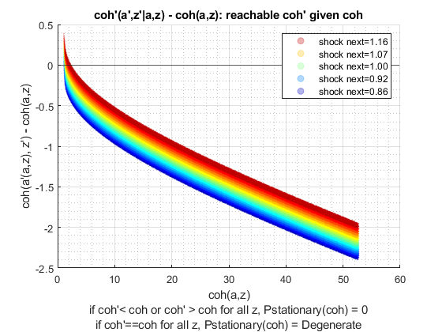 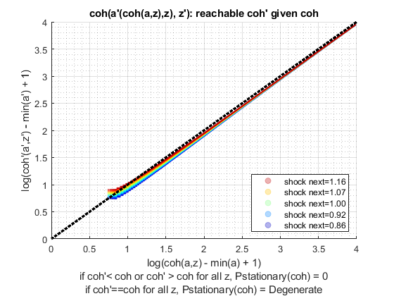 xxxxxxxxxxxxxxxxxxxxxxxxxxx
xxxxxxxxxxxxxxxxxxxxxxxxxxx
fl_z_rho = 0
fl_z_sig = 0.1
xxxxxxxxxxxxxxxxxxxxxxxxxxx
xxxxxxxxxxxxxxxxxxxxxxxxxxx
Elapsed time is 1.230613 seconds.
Elapsed time is 0.863058 seconds.
"tb_prob_drv, Percentiles of Y, …" "cl_mt_pol_a"
percentiles cl_mt_pol_aPercentileValues fracOfSumHeldBelowThisPercentile
___________ ___________________________ ________________________________
0.1 0 0
1 0 0
5 0 0
10 0 0
15 0 0
20 0 0
25 0 0
35 0 0
50 0.066756 0.26848
65 0.066756 0.26848
75 0.13351 0.59459
80 0.13351 0.59459
85 0.13351 0.59459
90 0.20027 0.7787
95 0.26702 0.8808
99 0.33378 0.97176
99.9 0.46729 0.99606
"tb_prob_drv, Percentiles of Y, …" "cl_mt_pol_coh"
percentiles cl_mt_pol_cohPercentileValues fracOfSumHeldBelowThisPercentile
___________ _____________________________ ________________________________
0.1 0.94347 0.00078389
1 1.0279 0.0090162
5 1.1199 0.054486
10 1.1689 0.11089
15 1.1883 0.12986
20 1.2201 0.19537
25 1.2374 0.22747
35 1.2782 0.30953
50 1.342 0.48976
65 1.3977 0.62536
75 1.4559 0.74167
80 1.4662 0.77257
85 1.5167 0.83513
90 1.5622 0.87901
95 1.6463 0.94188
99 1.7832 0.9876
99.9 1.9207 0.99862
"tb_prob_drv, Percentiles of Y, …" "cl_mt_pol_c"
percentiles cl_mt_pol_cPercentileValues fracOfSumHeldBelowThisPercentile
___________ ___________________________ ________________________________
0.1 0.94347 0.00082758
1 1.0279 0.0095187
5 1.1199 0.057523
10 1.1689 0.11707
15 1.1883 0.13709
20 1.2201 0.20626
25 1.2374 0.24015
35 1.2735 0.38857
50 1.2885 0.48561
65 1.3208 0.62969
75 1.3327 0.74787
80 1.3436 0.7895
85 1.3782 0.85466
90 1.3832 0.91217
95 1.3909 0.96034
99 1.42 0.98868
99.9 1.4566 0.99888
tb_outcomes_meansdperc: mean, sd, percentiles
mean sd coefofvar min max pYis0 pYisMINY pYisMAXY p0_1 p1 p5 p10 p15 p20 p25 p35 p50 p65 p75 p80 p85 p90 p95 p99 p99_9
________ ________ _________ _______ ______ _______ _________ ________ _______ ______ ______ ______ ______ ______ ______ ______ ________ ________ _______ _______ _______ _______ _______ _______ _______
cl_mt_pol_a 0.071443 0.083206 1.1646 0 48.264 0.42103 0.42103 0 0 0 0 0 0 0 0 0 0.066756 0.066756 0.13351 0.13351 0.13351 0.20027 0.26702 0.33378 0.46729
cl_mt_pol_coh 1.3532 0.15463 0.11426 0.94347 52.969 0 0.0011243 0 0.94347 1.0279 1.1199 1.1689 1.1883 1.2201 1.2374 1.2782 1.342 1.3977 1.4559 1.4662 1.5167 1.5622 1.6463 1.7832 1.9207
cl_mt_pol_c 1.2818 0.083202 0.064911 0.94347 4.7048 0 0.0011243 0 0.94347 1.0279 1.1199 1.1689 1.1883 1.2201 1.2374 1.2735 1.2885 1.3208 1.3327 1.3436 1.3782 1.3832 1.3909 1.42 1.4566
tb_outcomes_fracheld: fraction of asset/income/etc held by hh up to this percentile
fracByP0_1 fracByP1 fracByP5 fracByP10 fracByP15 fracByP20 fracByP25 fracByP35 fracByP50 fracByP65 fracByP75 fracByP80 fracByP85 fracByP90 fracByP95 fracByP99 fracByP99_9
__________ _________ ________ _________ _________ _________ _________ _________ _________ _________ _________ _________ _________ _________ _________ _________ ___________
cl_mt_pol_a 0 0 0 0 0 0 0 0 0.26848 0.26848 0.59459 0.59459 0.59459 0.7787 0.8808 0.97176 0.99606
cl_mt_pol_coh 0.00078389 0.0090162 0.054486 0.11089 0.12986 0.19537 0.22747 0.30953 0.48976 0.62536 0.74167 0.77257 0.83513 0.87901 0.94188 0.9876 0.99862
cl_mt_pol_c 0.00082758 0.0095187 0.057523 0.11707 0.13709 0.20626 0.24015 0.38857 0.48561 0.62969 0.74787 0.7895 0.85466 0.91217 0.96034 0.98868 0.99888
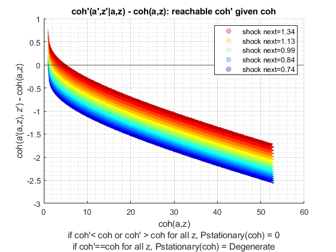 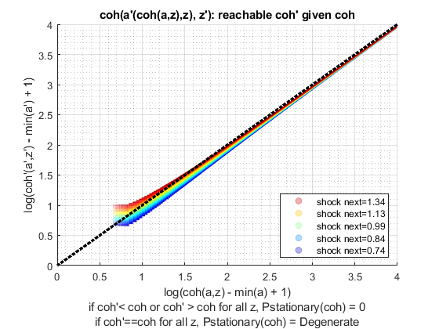 xxxxxxxxxxxxxxxxxxxxxxxxxxx
xxxxxxxxxxxxxxxxxxxxxxxxxxx
fl_z_rho = 0
fl_z_sig = 0.3
xxxxxxxxxxxxxxxxxxxxxxxxxxx
xxxxxxxxxxxxxxxxxxxxxxxxxxx
Elapsed time is 1.316092 seconds.
Elapsed time is 0.962692 seconds.
"tb_prob_drv, Percentiles of Y, …" "cl_mt_pol_a"
percentiles cl_mt_pol_aPercentileValues fracOfSumHeldBelowThisPercentile
___________ ___________________________ ________________________________
0.1 0 0
1 0 0
5 0 0
10 0 0
15 0.066756 0.0077823
20 0.13351 0.025024
25 0.13351 0.025024
35 0.26702 0.086732
50 0.40053 0.16846
65 0.6008 0.3264
75 0.80107 0.48874
80 0.86782 0.54401
85 1.0013 0.63466
90 1.2016 0.74791
95 1.4019 0.83576
99 2.0027 0.96244
99.9 2.6702 0.9946
"tb_prob_drv, Percentiles of Y, …" "cl_mt_pol_coh"
percentiles cl_mt_pol_cohPercentileValues fracOfSumHeldBelowThisPercentile
___________ _____________________________ ________________________________
0.1 0.56551 0.0003437
1 0.73134 0.004035
5 0.94579 0.024529
10 1.0826 0.05514
15 1.2124 0.084389
20 1.2879 0.12181
25 1.36 0.15626
35 1.5159 0.23525
50 1.7331 0.37453
65 1.9758 0.52301
75 2.1811 0.63826
80 2.3072 0.69811
85 2.4548 0.76215
90 2.6564 0.83158
95 2.962 0.90918
99 3.6034 0.97856
99.9 4.3872 0.99744
"tb_prob_drv, Percentiles of Y, …" "cl_mt_pol_c"
percentiles cl_mt_pol_cPercentileValues fracOfSumHeldBelowThisPercentile
___________ ___________________________ ________________________________
0.1 0.56551 0.00048275
1 0.73134 0.0056673
5 0.94579 0.034452
10 1.0826 0.077447
15 1.1456 0.11953
20 1.1564 0.1617
25 1.2157 0.21612
35 1.248 0.30394
50 1.3164 0.45529
65 1.3733 0.61274
75 1.4066 0.71497
80 1.4389 0.76758
85 1.4584 0.82581
90 1.4844 0.88113
95 1.5383 0.93922
99 1.6217 0.98735
99.9 1.7083 0.99867
tb_outcomes_meansdperc: mean, sd, percentiles
mean sd coefofvar min max pYis0 pYisMINY pYisMAXY p0_1 p1 p5 p10 p15 p20 p25 p35 p50 p65 p75 p80 p85 p90 p95 p99 p99_9
_______ _______ _________ _______ ______ _______ __________ ________ _______ _______ _______ ______ ________ _______ _______ _______ _______ ______ _______ _______ ______ ______ ______ ______ ______
cl_mt_pol_a 0.52313 0.46333 0.88569 0 49.533 0.12424 0.12424 0 0 0 0 0 0.066756 0.13351 0.13351 0.26702 0.40053 0.6008 0.80107 0.86782 1.0013 1.2016 1.4019 2.0027 2.6702
cl_mt_pol_coh 1.8162 0.61716 0.3398 0.49728 54.258 0 0.00033175 0 0.56551 0.73134 0.94579 1.0826 1.2124 1.2879 1.36 1.5159 1.7331 1.9758 2.1811 2.3072 2.4548 2.6564 2.962 3.6034 4.3872
cl_mt_pol_c 1.2931 0.17147 0.1326 0.49728 4.7257 0 0.00033175 0 0.56551 0.73134 0.94579 1.0826 1.1456 1.1564 1.2157 1.248 1.3164 1.3733 1.4066 1.4389 1.4584 1.4844 1.5383 1.6217 1.7083
tb_outcomes_fracheld: fraction of asset/income/etc held by hh up to this percentile
fracByP0_1 fracByP1 fracByP5 fracByP10 fracByP15 fracByP20 fracByP25 fracByP35 fracByP50 fracByP65 fracByP75 fracByP80 fracByP85 fracByP90 fracByP95 fracByP99 fracByP99_9
__________ _________ ________ _________ _________ _________ _________ _________ _________ _________ _________ _________ _________ _________ _________ _________ ___________
cl_mt_pol_a 0 0 0 0 0.0077823 0.025024 0.025024 0.086732 0.16846 0.3264 0.48874 0.54401 0.63466 0.74791 0.83576 0.96244 0.9946
cl_mt_pol_coh 0.0003437 0.004035 0.024529 0.05514 0.084389 0.12181 0.15626 0.23525 0.37453 0.52301 0.63826 0.69811 0.76215 0.83158 0.90918 0.97856 0.99744
cl_mt_pol_c 0.00048275 0.0056673 0.034452 0.077447 0.11953 0.1617 0.21612 0.30394 0.45529 0.61274 0.71497 0.76758 0.82581 0.88113 0.93922 0.98735 0.99867
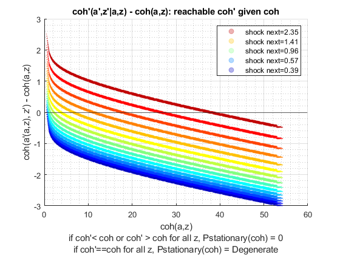 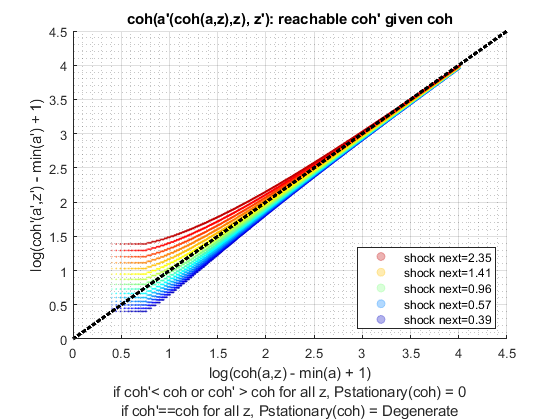 Simulate Model with schok persistence = 0.5
close all for fl_z_sig = ar_fl_z_sig disp('xxxxxxxxxxxxxxxxxxxxxxxxxxx'); disp('xxxxxxxxxxxxxxxxxxxxxxxxxxx'); disp(['fl_z_rho = ' num2str(ar_fl_z_rho(2))]); disp(['fl_z_sig = ' num2str(fl_z_sig)]); disp('xxxxxxxxxxxxxxxxxxxxxxxxxxx'); disp('xxxxxxxxxxxxxxxxxxxxxxxxxxx'); disp(''); disp(''); disp(''); disp(''); % Call Default Parameters <https://fanwangecon.github.io/CodeDynaAsset/m_az/paramfunc/html/ffs_az_set_default_param.html ffs_az_set_default_param> bl_input_override = true; it_param_set = 9; [param_map, support_map] = ffs_az_set_default_param(it_param_set); % Simulation Accuracy param_map('it_a_n') = it_a_n; param_map('it_z_n') = it_z_n; param_map('fl_z_rho') = ar_fl_z_rho(2); param_map('fl_z_sig') = fl_z_sig; % Display Parameters support_map('bl_display') = false; support_map('bl_display_final') = false; support_map('bl_time') = true; support_map('bl_profile') = false; % Call Grid Generator <https://fanwangecon.github.io/CodeDynaAsset/m_az/paramfunc/html/ffs_az_get_funcgrid.html ffs_az_get_funcgrid> [armt_map, func_map] = ffs_az_get_funcgrid(param_map, support_map, bl_input_override); % Call Dynamic Programming Problem <https://fanwangecon.github.io/CodeDynaAsset/m_az/solve/html/ff_az_vf_vecsv.html ff_az_vf_vecsv> result_map = ff_az_vf_vecsv(param_map, support_map, armt_map, func_map); % Call Distribution CProgram result_map = ff_az_ds_vec(param_map, support_map, armt_map, func_map, result_map, bl_input_override); % Snap snapnow; end % close all close all;
xxxxxxxxxxxxxxxxxxxxxxxxxxx
xxxxxxxxxxxxxxxxxxxxxxxxxxx
fl_z_rho = 0.5
fl_z_sig = 0.05
xxxxxxxxxxxxxxxxxxxxxxxxxxx
xxxxxxxxxxxxxxxxxxxxxxxxxxx
Warning: Name is nonexistent or not a
directory:
C:\Users\fan\CodeDynaAsset\m_az\test\ff_az_ds
Elapsed time is 1.293884 seconds.
Elapsed time is 0.794446 seconds.
"tb_prob_drv, Percentiles of Y, …" "cl_mt_pol_a"
percentiles cl_mt_pol_aPercentileValues fracOfSumHeldBelowThisPercentile
___________ ___________________________ ________________________________
0.1 0 0
1 0 0
5 0 0
10 0 0
15 0 0
20 0 0
25 0 0
35 0 0
50 0 0
65 0 0
75 0 0
80 0 0
85 0 0
90 0 0
95 0.066756 0.80204
99 0.066756 0.80204
99.9 0.13351 0.96496
"tb_prob_drv, Percentiles of Y, …" "cl_mt_pol_coh"
percentiles cl_mt_pol_cohPercentileValues fracOfSumHeldBelowThisPercentile
___________ _____________________________ ________________________________
0.1 1.0746 0.0022477
1 1.1291 0.023501
5 1.1574 0.059425
10 1.1864 0.12834
15 1.2161 0.23852
20 1.2161 0.23852
25 1.2161 0.23852
35 1.2466 0.38527
50 1.2778 0.54805
65 1.3099 0.69863
75 1.3427 0.81547
80 1.3427 0.81547
85 1.3763 0.89281
90 1.3763 0.89281
95 1.4111 0.94814
99 1.5132 0.98824
99.9 1.5879 0.99912
"tb_prob_drv, Percentiles of Y, …" "cl_mt_pol_c"
percentiles cl_mt_pol_cPercentileValues fracOfSumHeldBelowThisPercentile
___________ ___________________________ ________________________________
0.1 1.0746 0.0022548
1 1.1291 0.023576
5 1.1574 0.059613
10 1.1864 0.12875
15 1.2161 0.23928
20 1.2161 0.23928
25 1.2161 0.23928
35 1.2466 0.38649
50 1.2778 0.54978
65 1.3099 0.70096
75 1.3427 0.81843
80 1.3427 0.81843
85 1.3763 0.90577
90 1.3763 0.90577
95 1.4108 0.97654
99 1.4156 0.99
99.9 1.4544 0.99974
tb_outcomes_meansdperc: mean, sd, percentiles
mean sd coefofvar min max pYis0 pYisMINY pYisMAXY p0_1 p1 p5 p10 p15 p20 p25 p35 p50 p65 p75 p80 p85 p90 p95 p99 p99_9
_________ ________ _________ ______ ______ _______ ________ ________ ______ ______ ______ ______ ______ ______ ______ ______ ______ ______ ______ ______ ______ ______ ________ ________ _______
cl_mt_pol_a 0.0040531 0.017835 4.4004 0 48.064 0.94567 0.94567 0 0 0 0 0 0 0 0 0 0 0 0 0 0 0 0.066756 0.066756 0.13351
cl_mt_pol_coh 1.2842 0.080258 0.062499 1.0746 52.769 0 0.002686 0 1.0746 1.1291 1.1574 1.1864 1.2161 1.2161 1.2161 1.2466 1.2778 1.3099 1.3427 1.3427 1.3763 1.3763 1.4111 1.5132 1.5879
cl_mt_pol_c 1.2801 0.072101 0.056324 1.0746 4.7054 0 0.002686 0 1.0746 1.1291 1.1574 1.1864 1.2161 1.2161 1.2161 1.2466 1.2778 1.3099 1.3427 1.3427 1.3763 1.3763 1.4108 1.4156 1.4544
tb_outcomes_fracheld: fraction of asset/income/etc held by hh up to this percentile
fracByP0_1 fracByP1 fracByP5 fracByP10 fracByP15 fracByP20 fracByP25 fracByP35 fracByP50 fracByP65 fracByP75 fracByP80 fracByP85 fracByP90 fracByP95 fracByP99 fracByP99_9
__________ ________ ________ _________ _________ _________ _________ _________ _________ _________ _________ _________ _________ _________ _________ _________ ___________
cl_mt_pol_a 0 0 0 0 0 0 0 0 0 0 0 0 0 0 0.80204 0.80204 0.96496
cl_mt_pol_coh 0.0022477 0.023501 0.059425 0.12834 0.23852 0.23852 0.23852 0.38527 0.54805 0.69863 0.81547 0.81547 0.89281 0.89281 0.94814 0.98824 0.99912
cl_mt_pol_c 0.0022548 0.023576 0.059613 0.12875 0.23928 0.23928 0.23928 0.38649 0.54978 0.70096 0.81843 0.81843 0.90577 0.90577 0.97654 0.99 0.99974
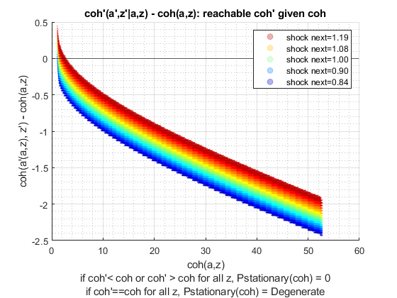 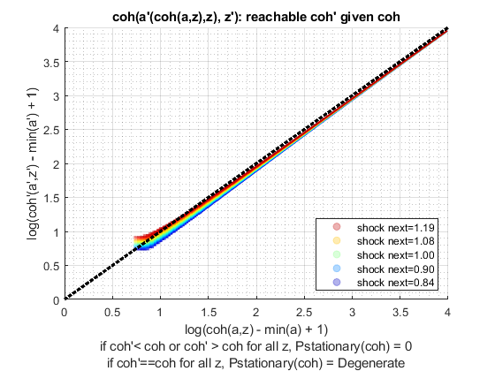 xxxxxxxxxxxxxxxxxxxxxxxxxxx
xxxxxxxxxxxxxxxxxxxxxxxxxxx
fl_z_rho = 0.5
fl_z_sig = 0.1
xxxxxxxxxxxxxxxxxxxxxxxxxxx
xxxxxxxxxxxxxxxxxxxxxxxxxxx
Elapsed time is 1.314469 seconds.
Elapsed time is 0.905495 seconds.
"tb_prob_drv, Percentiles of Y, …" "cl_mt_pol_a"
percentiles cl_mt_pol_aPercentileValues fracOfSumHeldBelowThisPercentile
___________ ___________________________ ________________________________
0.1 0 0
1 0 0
5 0 0
10 0 0
15 0 0
20 0 0
25 0 0
35 0 0
50 0 0
65 0.066756 0.21327
75 0.066756 0.21327
80 0.13351 0.37397
85 0.20027 0.52146
90 0.20027 0.52146
95 0.33378 0.80182
99 0.53405 0.93881
99.9 0.73431 0.98985
"tb_prob_drv, Percentiles of Y, …" "cl_mt_pol_coh"
percentiles cl_mt_pol_cohPercentileValues fracOfSumHeldBelowThisPercentile
___________ _____________________________ ________________________________
0.1 0.89914 0.0016283
1 0.99269 0.016746
5 1.0431 0.041738
10 1.096 0.088509
15 1.1516 0.16155
20 1.1644 0.17174
25 1.21 0.2577
35 1.2714 0.36693
50 1.3359 0.4776
65 1.4043 0.62476
75 1.4727 0.70338
80 1.5405 0.75966
85 1.5497 0.81269
90 1.6283 0.87034
95 1.755 0.93341
99 2.0201 0.98443
99.9 2.3125 0.99834
"tb_prob_drv, Percentiles of Y, …" "cl_mt_pol_c"
percentiles cl_mt_pol_cPercentileValues fracOfSumHeldBelowThisPercentile
___________ ___________________________ ________________________________
0.1 0.89914 0.0017206
1 0.99269 0.017695
5 1.0431 0.044102
10 1.096 0.093522
15 1.1516 0.1707
20 1.1644 0.1815
25 1.21 0.27315
35 1.2714 0.39682
50 1.2784 0.47198
65 1.3375 0.65551
75 1.4053 0.75686
80 1.4076 0.7825
85 1.4098 0.84902
90 1.4131 0.88795
95 1.4297 0.94315
99 1.5065 0.98827
99.9 1.5697 0.99877
tb_outcomes_meansdperc: mean, sd, percentiles
mean sd coefofvar min max pYis0 pYisMINY pYisMAXY p0_1 p1 p5 p10 p15 p20 p25 p35 p50 p65 p75 p80 p85 p90 p95 p99 p99_9
_______ _______ _________ _______ ______ _______ _________ ________ _______ _______ ______ _____ ______ ______ ____ ______ ______ ________ ________ _______ _______ _______ _______ _______ _______
cl_mt_pol_a 0.07261 0.1144 1.5755 0 48.331 0.52904 0.52904 0 0 0 0 0 0 0 0 0 0 0.066756 0.066756 0.13351 0.20027 0.20027 0.33378 0.53405 0.73431
cl_mt_pol_coh 1.3544 0.21734 0.16047 0.89914 53.048 0 0.0024529 0 0.89914 0.99269 1.0431 1.096 1.1516 1.1644 1.21 1.2714 1.3359 1.4043 1.4727 1.5405 1.5497 1.6283 1.755 2.0201 2.3125
cl_mt_pol_c 1.2818 0.12208 0.095243 0.89914 4.7166 0 0.0024529 0 0.89914 0.99269 1.0431 1.096 1.1516 1.1644 1.21 1.2714 1.2784 1.3375 1.4053 1.4076 1.4098 1.4131 1.4297 1.5065 1.5697
tb_outcomes_fracheld: fraction of asset/income/etc held by hh up to this percentile
fracByP0_1 fracByP1 fracByP5 fracByP10 fracByP15 fracByP20 fracByP25 fracByP35 fracByP50 fracByP65 fracByP75 fracByP80 fracByP85 fracByP90 fracByP95 fracByP99 fracByP99_9
__________ ________ ________ _________ _________ _________ _________ _________ _________ _________ _________ _________ _________ _________ _________ _________ ___________
cl_mt_pol_a 0 0 0 0 0 0 0 0 0 0.21327 0.21327 0.37397 0.52146 0.52146 0.80182 0.93881 0.98985
cl_mt_pol_coh 0.0016283 0.016746 0.041738 0.088509 0.16155 0.17174 0.2577 0.36693 0.4776 0.62476 0.70338 0.75966 0.81269 0.87034 0.93341 0.98443 0.99834
cl_mt_pol_c 0.0017206 0.017695 0.044102 0.093522 0.1707 0.1815 0.27315 0.39682 0.47198 0.65551 0.75686 0.7825 0.84902 0.88795 0.94315 0.98827 0.99877
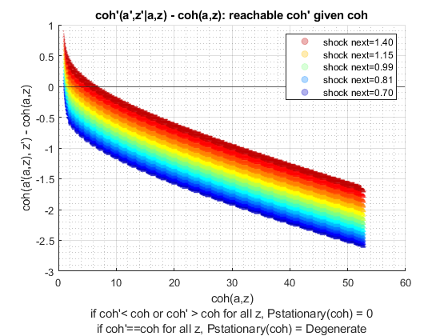 
xxxxxxxxxxxxxxxxxxxxxxxxxxx
xxxxxxxxxxxxxxxxxxxxxxxxxxx
fl_z_rho = 0.5
fl_z_sig = 0.3
xxxxxxxxxxxxxxxxxxxxxxxxxxx
xxxxxxxxxxxxxxxxxxxxxxxxxxx
Elapsed time is 1.486762 seconds.
Elapsed time is 1.088227 seconds.
"tb_prob_drv, Percentiles of Y, …" "cl_mt_pol_a"
percentiles cl_mt_pol_aPercentileValues fracOfSumHeldBelowThisPercentile
___________ ___________________________ ________________________________
0.1 0 0
1 0 0
5 0 0
10 0 0
15 0.066756 0.004579
20 0.13351 0.010532
25 0.20027 0.023664
35 0.40053 0.065828
50 0.66756 0.14459
65 1.0013 0.26522
75 1.3351 0.39384
80 1.6021 0.49109
85 1.8692 0.5778
90 2.2029 0.67464
95 2.8705 0.81468
99 4.1389 0.94677
99.9 5.8745 0.9929
"tb_prob_drv, Percentiles of Y, …" "cl_mt_pol_coh"
percentiles cl_mt_pol_cohPercentileValues fracOfSumHeldBelowThisPercentile
___________ _____________________________ ________________________________
0.1 0.42606 0.00020644
1 0.6311 0.0024637
5 0.83999 0.017289
10 0.9839 0.036336
15 1.1067 0.061873
20 1.2436 0.09087
25 1.374 0.11633
35 1.6025 0.18679
50 1.9572 0.30142
65 2.4277 0.45007
75 2.8342 0.56555
80 3.0846 0.63181
85 3.3999 0.70635
90 3.8249 0.78508
95 4.5448 0.87847
99 6.02 0.96937
99.9 7.9289 0.99613
"tb_prob_drv, Percentiles of Y, …" "cl_mt_pol_c"
percentiles cl_mt_pol_cPercentileValues fracOfSumHeldBelowThisPercentile
___________ ___________________________ ________________________________
0.1 0.42606 0.0003533
1 0.6311 0.0042163
5 0.83999 0.029953
10 0.96348 0.064975
15 1.0383 0.10471
20 1.1084 0.14439
25 1.1394 0.19085
35 1.2128 0.27666
50 1.334 0.42217
65 1.4206 0.58034
75 1.4931 0.69105
80 1.5182 0.74942
85 1.5782 0.80776
90 1.6092 0.86873
95 1.6951 0.93138
99 1.8658 0.98528
99.9 2.0417 0.9984
tb_outcomes_meansdperc: mean, sd, percentiles
mean sd coefofvar min max pYis0 pYisMINY pYisMAXY p0_1 p1 p5 p10 p15 p20 p25 p35 p50 p65 p75 p80 p85 p90 p95 p99 p99_9
_______ _______ _________ _______ ______ _______ _________ ________ _______ ______ _______ _______ ________ _______ _______ _______ _______ ______ ______ ______ ______ ______ ______ ______ ______
cl_mt_pol_a 0.92716 0.95088 1.0256 0 49.866 0.11176 0.11176 0 0 0 0 0 0.066756 0.13351 0.20027 0.40053 0.66756 1.0013 1.3351 1.6021 1.8692 2.2029 2.8705 4.1389 5.8745
cl_mt_pol_coh 2.2304 1.1819 0.5299 0.42606 54.655 0 0.0010807 0 0.42606 0.6311 0.83999 0.9839 1.1067 1.2436 1.374 1.6025 1.9572 2.4277 2.8342 3.0846 3.3999 3.8249 4.5448 6.02 7.9289
cl_mt_pol_c 1.3033 0.26074 0.20006 0.42606 4.7886 0 0.0010807 0 0.42606 0.6311 0.83999 0.96348 1.0383 1.1084 1.1394 1.2128 1.334 1.4206 1.4931 1.5182 1.5782 1.6092 1.6951 1.8658 2.0417
tb_outcomes_fracheld: fraction of asset/income/etc held by hh up to this percentile
fracByP0_1 fracByP1 fracByP5 fracByP10 fracByP15 fracByP20 fracByP25 fracByP35 fracByP50 fracByP65 fracByP75 fracByP80 fracByP85 fracByP90 fracByP95 fracByP99 fracByP99_9
__________ _________ ________ _________ _________ _________ _________ _________ _________ _________ _________ _________ _________ _________ _________ _________ ___________
cl_mt_pol_a 0 0 0 0 0.004579 0.010532 0.023664 0.065828 0.14459 0.26522 0.39384 0.49109 0.5778 0.67464 0.81468 0.94677 0.9929
cl_mt_pol_coh 0.00020644 0.0024637 0.017289 0.036336 0.061873 0.09087 0.11633 0.18679 0.30142 0.45007 0.56555 0.63181 0.70635 0.78508 0.87847 0.96937 0.99613
cl_mt_pol_c 0.0003533 0.0042163 0.029953 0.064975 0.10471 0.14439 0.19085 0.27666 0.42217 0.58034 0.69105 0.74942 0.80776 0.86873 0.93138 0.98528 0.9984
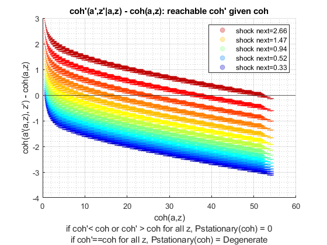 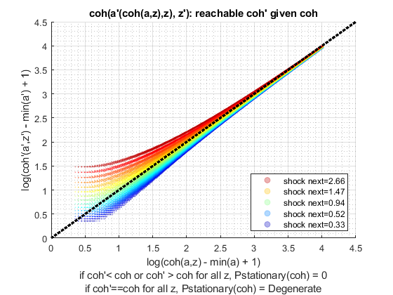 Simulate Model with schok persistence = 0.99 (very persistent)
close all for fl_z_sig = ar_fl_z_sig disp('xxxxxxxxxxxxxxxxxxxxxxxxxxx'); disp('xxxxxxxxxxxxxxxxxxxxxxxxxxx'); disp(['fl_z_rho = ' num2str(ar_fl_z_rho(3))]); disp(['fl_z_sig = ' num2str(fl_z_sig)]); disp('xxxxxxxxxxxxxxxxxxxxxxxxxxx'); disp('xxxxxxxxxxxxxxxxxxxxxxxxxxx'); disp(''); disp(''); disp(''); disp(''); % Call Default Parameters <https://fanwangecon.github.io/CodeDynaAsset/m_az/paramfunc/html/ffs_az_set_default_param.html ffs_az_set_default_param> bl_input_override = true; it_param_set = 9; [param_map, support_map] = ffs_az_set_default_param(it_param_set); % Simulation Accuracy param_map('it_a_n') = it_a_n; param_map('it_z_n') = it_z_n; param_map('fl_z_rho') = ar_fl_z_rho(3); param_map('fl_z_sig') = fl_z_sig; % Display Parameters support_map('bl_display') = false; support_map('bl_display_final') = false; support_map('bl_time') = true; support_map('bl_profile') = false; % Call Grid Generator <https://fanwangecon.github.io/CodeDynaAsset/m_az/paramfunc/html/ffs_az_get_funcgrid.html ffs_az_get_funcgrid> [armt_map, func_map] = ffs_az_get_funcgrid(param_map, support_map, bl_input_override); % Call Dynamic Programming Problem <https://fanwangecon.github.io/CodeDynaAsset/m_az/solve/html/ff_az_vf_vecsv.html ff_az_vf_vecsv> result_map = ff_az_vf_vecsv(param_map, support_map, armt_map, func_map); % Call Distribution CProgram result_map = ff_az_ds_vec(param_map, support_map, armt_map, func_map, result_map, bl_input_override); % Snap snapnow; end % close all close all; clear all;
xxxxxxxxxxxxxxxxxxxxxxxxxxx
xxxxxxxxxxxxxxxxxxxxxxxxxxx
fl_z_rho = 0.99
fl_z_sig = 0.05
xxxxxxxxxxxxxxxxxxxxxxxxxxx
xxxxxxxxxxxxxxxxxxxxxxxxxxx
Elapsed time is 1.370849 seconds.
Elapsed time is 4.163315 seconds.
"tb_prob_drv, Percentiles of Y, …" "cl_mt_pol_a"
percentiles cl_mt_pol_aPercentileValues fracOfSumHeldBelowThisPercentile
___________ ___________________________ ________________________________
0.1 0 NaN
1 0 NaN
5 0 NaN
10 0 NaN
15 0 NaN
20 0 NaN
25 0 NaN
35 0 NaN
50 0 NaN
65 0 NaN
75 0 NaN
80 0 NaN
85 0 NaN
90 0 NaN
95 0 NaN
99 0 NaN
99.9 0 NaN
"tb_prob_drv, Percentiles of Y, …" "cl_mt_pol_coh"
percentiles cl_mt_pol_cohPercentileValues fracOfSumHeldBelowThisPercentile
___________ _____________________________ ________________________________
0.1 0.40402 0.0024412
1 0.47029 0.0085523
5 0.54744 0.02214
10 0.63725 0.048987
15 0.74179 0.096139
20 0.86348 0.16976
25 0.86348 0.16976
35 1.0051 0.27198
50 1.17 0.39815
65 1.362 0.53665
75 1.5854 0.67183
80 1.5854 0.67183
85 1.8455 0.78913
90 2.1482 0.87964
95 2.5006 0.9417
99 2.9108 0.97953
99.9 3.3883 1
"tb_prob_drv, Percentiles of Y, …" "cl_mt_pol_c"
percentiles cl_mt_pol_cPercentileValues fracOfSumHeldBelowThisPercentile
___________ ___________________________ ________________________________
0.1 0.40402 0.0024412
1 0.47029 0.0085523
5 0.54744 0.02214
10 0.63725 0.048987
15 0.74179 0.096139
20 0.86348 0.16976
25 0.86348 0.16976
35 1.0051 0.27198
50 1.17 0.39815
65 1.362 0.53665
75 1.5854 0.67183
80 1.5854 0.67183
85 1.8455 0.78913
90 2.1482 0.87964
95 2.5006 0.9417
99 2.9108 0.97953
99.9 3.3883 1
tb_outcomes_meansdperc: mean, sd, percentiles
mean sd coefofvar min max pYis0 pYisMINY pYisMAXY p0_1 p1 p5 p10 p15 p20 p25 p35 p50 p65 p75 p80 p85 p90 p95 p99 p99_9
______ _______ _________ _______ ______ _____ _________ ________ _______ _______ _______ _______ _______ _______ _______ ______ ____ _____ ______ ______ ______ ______ ______ ______ ______
cl_mt_pol_a 0 0 NaN 0 48.264 1 1 0 0 0 0 0 0 0 0 0 0 0 0 0 0 0 0 0 0
cl_mt_pol_coh 1.2806 0.56036 0.43756 0.40402 54.638 0 0.0077382 0 0.40402 0.47029 0.54744 0.63725 0.74179 0.86348 0.86348 1.0051 1.17 1.362 1.5854 1.5854 1.8455 2.1482 2.5006 2.9108 3.3883
cl_mt_pol_c 1.2806 0.56036 0.43756 0.40402 6.9748 0 0.0077382 0 0.40402 0.47029 0.54744 0.63725 0.74179 0.86348 0.86348 1.0051 1.17 1.362 1.5854 1.5854 1.8455 2.1482 2.5006 2.9108 3.3883
tb_outcomes_fracheld: fraction of asset/income/etc held by hh up to this percentile
fracByP0_1 fracByP1 fracByP5 fracByP10 fracByP15 fracByP20 fracByP25 fracByP35 fracByP50 fracByP65 fracByP75 fracByP80 fracByP85 fracByP90 fracByP95 fracByP99 fracByP99_9
__________ _________ ________ _________ _________ _________ _________ _________ _________ _________ _________ _________ _________ _________ _________ _________ ___________
cl_mt_pol_a NaN NaN NaN NaN NaN NaN NaN NaN NaN NaN NaN NaN NaN NaN NaN NaN NaN
cl_mt_pol_coh 0.0024412 0.0085523 0.02214 0.048987 0.096139 0.16976 0.16976 0.27198 0.39815 0.53665 0.67183 0.67183 0.78913 0.87964 0.9417 0.97953 1
cl_mt_pol_c 0.0024412 0.0085523 0.02214 0.048987 0.096139 0.16976 0.16976 0.27198 0.39815 0.53665 0.67183 0.67183 0.78913 0.87964 0.9417 0.97953 1
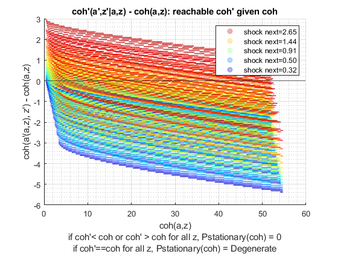 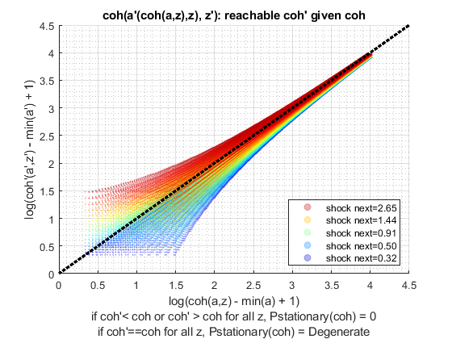 xxxxxxxxxxxxxxxxxxxxxxxxxxx
xxxxxxxxxxxxxxxxxxxxxxxxxxx
fl_z_rho = 0.99
fl_z_sig = 0.1
xxxxxxxxxxxxxxxxxxxxxxxxxxx
xxxxxxxxxxxxxxxxxxxxxxxxxxx
Elapsed time is 1.571146 seconds.
Elapsed time is 4.021246 seconds.
"tb_prob_drv, Percentiles of Y, …" "cl_mt_pol_a"
percentiles cl_mt_pol_aPercentileValues fracOfSumHeldBelowThisPercentile
___________ ___________________________ ________________________________
0.1 0 0
1 0 0
5 0 0
10 0 0
15 0 0
20 0 0
25 0 0
35 0 0
50 0 0
65 0 0
75 0 0
80 0 0
85 0 0
90 0 0
95 0 0
99 1.0681 0.1153
99.9 4.3391 0.83862
"tb_prob_drv, Percentiles of Y, …" "cl_mt_pol_coh"
percentiles cl_mt_pol_cohPercentileValues fracOfSumHeldBelowThisPercentile
___________ _____________________________ ________________________________
0.1 0.10708 0.00063165
1 0.14509 0.0024721
5 0.19659 0.0072354
10 0.26639 0.01819
15 0.36096 0.040584
20 0.4891 0.081285
25 0.4891 0.081285
35 0.66273 0.14706
50 0.898 0.24157
65 1.2168 0.36232
75 1.6488 0.49947
80 1.6488 0.49947
85 2.2341 0.63773
90 3.0272 0.76044
95 4.1019 0.85311
99 7.2687 0.92798
99.9 11.842 0.99083
"tb_prob_drv, Percentiles of Y, …" "cl_mt_pol_c"
percentiles cl_mt_pol_cPercentileValues fracOfSumHeldBelowThisPercentile
___________ ___________________________ ________________________________
0.1 0.10708 0.00064618
1 0.14509 0.002529
5 0.19659 0.0074018
10 0.26639 0.018608
15 0.36096 0.041518
20 0.4891 0.083155
25 0.4891 0.083155
35 0.66273 0.15044
50 0.898 0.24713
65 1.2168 0.37066
75 1.6488 0.51096
80 1.6488 0.51096
85 2.2341 0.65241
90 3.0272 0.77799
95 4.1019 0.87304
99 5.7984 0.94515
99.9 7.5696 0.9943
tb_outcomes_meansdperc: mean, sd, percentiles
mean sd coefofvar min max pYis0 pYisMINY pYisMAXY p0_1 p1 p5 p10 p15 p20 p25 p35 p50 p65 p75 p80 p85 p90 p95 p99 p99_9
________ _______ _________ _______ ______ _______ _________ ________ _______ _______ _______ _______ _______ ______ ______ _______ _____ ______ ______ ______ ______ ______ ______ ______ ______
cl_mt_pol_a 0.029503 0.28874 9.787 0 48.531 0.98232 0.98232 0 0 0 0 0 0 0 0 0 0 0 0 0 0 0 0 1.0681 4.3391
cl_mt_pol_coh 1.3121 1.3607 1.037 0.10708 58.781 0 0.0077404 0 0.10708 0.14509 0.19659 0.26639 0.36096 0.4891 0.4891 0.66273 0.898 1.2168 1.6488 1.6488 2.2341 3.0272 4.1019 7.2687 11.842
cl_mt_pol_c 1.2826 1.2028 0.93775 0.10708 10.317 0 0.0077404 0 0.10708 0.14509 0.19659 0.26639 0.36096 0.4891 0.4891 0.66273 0.898 1.2168 1.6488 1.6488 2.2341 3.0272 4.1019 5.7984 7.5696
tb_outcomes_fracheld: fraction of asset/income/etc held by hh up to this percentile
fracByP0_1 fracByP1 fracByP5 fracByP10 fracByP15 fracByP20 fracByP25 fracByP35 fracByP50 fracByP65 fracByP75 fracByP80 fracByP85 fracByP90 fracByP95 fracByP99 fracByP99_9
__________ _________ _________ _________ _________ _________ _________ _________ _________ _________ _________ _________ _________ _________ _________ _________ ___________
cl_mt_pol_a 0 0 0 0 0 0 0 0 0 0 0 0 0 0 0 0.1153 0.83862
cl_mt_pol_coh 0.00063165 0.0024721 0.0072354 0.01819 0.040584 0.081285 0.081285 0.14706 0.24157 0.36232 0.49947 0.49947 0.63773 0.76044 0.85311 0.92798 0.99083
cl_mt_pol_c 0.00064618 0.002529 0.0074018 0.018608 0.041518 0.083155 0.083155 0.15044 0.24713 0.37066 0.51096 0.51096 0.65241 0.77799 0.87304 0.94515 0.9943
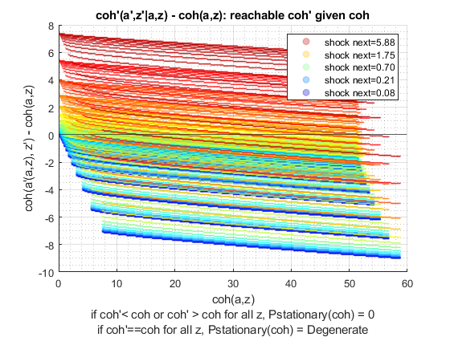 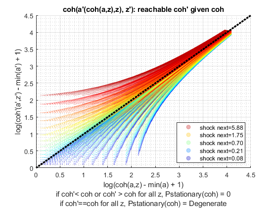 xxxxxxxxxxxxxxxxxxxxxxxxxxx
xxxxxxxxxxxxxxxxxxxxxxxxxxx
fl_z_rho = 0.99
fl_z_sig = 0.3
xxxxxxxxxxxxxxxxxxxxxxxxxxx
xxxxxxxxxxxxxxxxxxxxxxxxxxx
Elapsed time is 2.679966 seconds.
Elapsed time is 7.209820 seconds.
"tb_prob_drv, Percentiles of Y, …" "cl_mt_pol_a"
percentiles cl_mt_pol_aPercentileValues fracOfSumHeldBelowThisPercentile
___________ ___________________________ ________________________________
0.1 0.53405 0.034755
1 0.53405 0.034755
5 0.53405 0.034755
10 0.53405 0.034755
15 0.53405 0.034755
20 0.53405 0.034755
25 0.53405 0.034755
35 0.53405 0.034755
50 0.86782 0.0426
65 2.6035 0.080117
75 5.2069 0.1364
80 7.8772 0.18496
85 12.75 0.26239
90 22.029 0.38993
95 41.989 0.62754
99 50 1
99.9 50 1
"tb_prob_drv, Percentiles of Y, …" "cl_mt_pol_coh"
percentiles cl_mt_pol_cohPercentileValues fracOfSumHeldBelowThisPercentile
___________ _____________________________ ________________________________
0.1 0.54753 0.00041276
1 0.54773 0.0012463
5 0.54949 0.0055858
10 0.5526 0.0097614
15 0.56033 0.015467
20 0.56033 0.015467
25 0.57958 0.022377
35 0.62747 0.029702
50 1.038 0.039778
65 2.9539 0.073304
75 5.9696 0.12647
80 8.9803 0.17258
85 14.507 0.24455
90 25.032 0.3642
95 47.762 0.5846
99 70.237 0.9054
99.9 98.487 1
"tb_prob_drv, Percentiles of Y, …" "cl_mt_pol_c"
percentiles cl_mt_pol_cPercentileValues fracOfSumHeldBelowThisPercentile
___________ ___________________________ ________________________________
0.1 0.013487 5.3769e-05
1 0.013689 0.00016891
5 0.015441 0.00085567
10 0.018552 0.0017568
15 0.018552 0.0017568
20 0.026289 0.0035983
25 0.026289 0.0035983
35 0.045539 0.0068819
50 0.16069 0.016306
65 0.37881 0.041911
75 0.69089 0.07747
80 1.1315 0.10915
85 1.6586 0.15546
90 2.9103 0.23368
95 6.3085 0.37615
99 20.237 0.74292
99.9 48.487 1
tb_outcomes_meansdperc: mean, sd, percentiles
mean sd coefofvar min max pYis0 pYisMINY pYisMAXY p0_1 p1 p5 p10 p15 p20 p25 p35 p50 p65 p75 p80 p85 p90 p95 p99 p99_9
______ ______ _________ __________ ______ __________ __________ _________ ________ ________ ________ ________ ________ ________ ________ ________ _______ _______ _______ ______ ______ ______ ______ ______ ______
cl_mt_pol_a 6.5364 12.238 1.8723 0 50 2.7213e-05 2.7213e-05 0.033535 0.53405 0.53405 0.53405 0.53405 0.53405 0.53405 0.53405 0.53405 0.86782 2.6035 5.2069 7.8772 12.75 22.029 41.989 50 50
cl_mt_pol_coh 7.9813 16.213 2.0314 0.00013575 98.487 0 8.0739e-07 0.0074942 0.54753 0.54773 0.54949 0.5526 0.56033 0.56033 0.57958 0.62747 1.038 2.9539 5.9696 8.9803 14.507 25.032 47.762 70.237 98.487
cl_mt_pol_c 1.4449 5.0222 3.4759 0.00013575 48.487 0 8.0739e-07 0.0074942 0.013487 0.013689 0.015441 0.018552 0.018552 0.026289 0.026289 0.045539 0.16069 0.37881 0.69089 1.1315 1.6586 2.9103 6.3085 20.237 48.487
tb_outcomes_fracheld: fraction of asset/income/etc held by hh up to this percentile
fracByP0_1 fracByP1 fracByP5 fracByP10 fracByP15 fracByP20 fracByP25 fracByP35 fracByP50 fracByP65 fracByP75 fracByP80 fracByP85 fracByP90 fracByP95 fracByP99 fracByP99_9
__________ __________ __________ _________ _________ _________ _________ _________ _________ _________ _________ _________ _________ _________ _________ _________ ___________
cl_mt_pol_a 0.034755 0.034755 0.034755 0.034755 0.034755 0.034755 0.034755 0.034755 0.0426 0.080117 0.1364 0.18496 0.26239 0.38993 0.62754 1 1
cl_mt_pol_coh 0.00041276 0.0012463 0.0055858 0.0097614 0.015467 0.015467 0.022377 0.029702 0.039778 0.073304 0.12647 0.17258 0.24455 0.3642 0.5846 0.9054 1
cl_mt_pol_c 5.3769e-05 0.00016891 0.00085567 0.0017568 0.0017568 0.0035983 0.0035983 0.0068819 0.016306 0.041911 0.07747 0.10915 0.15546 0.23368 0.37615 0.74292 1
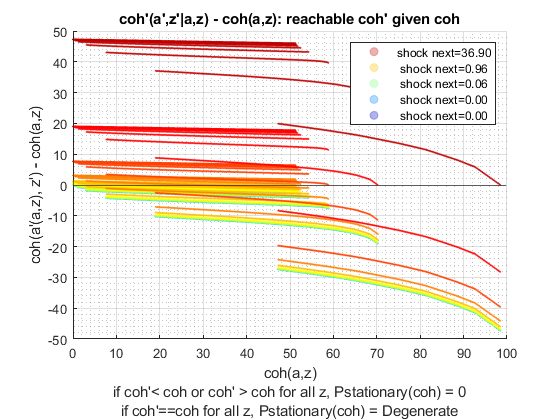 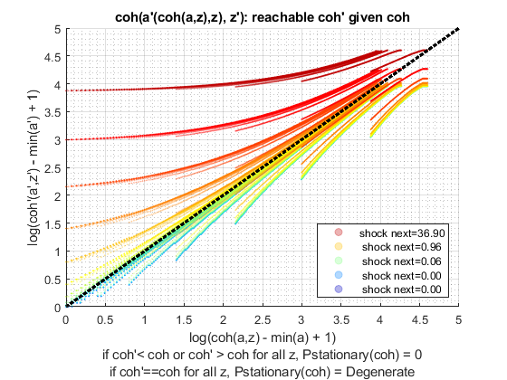